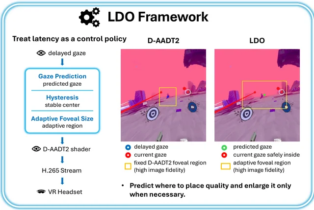
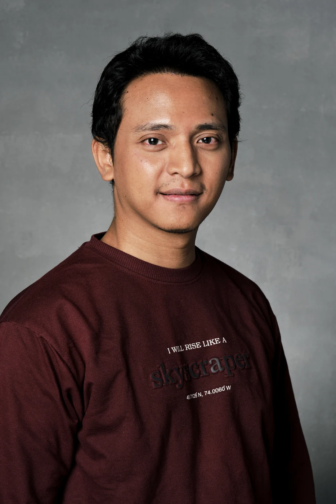
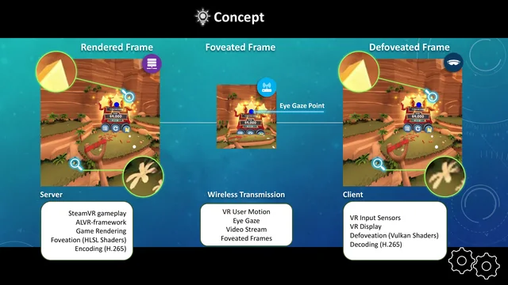
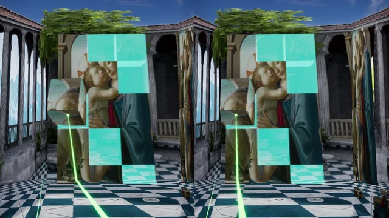

Latency-driven foveation
Predicting where a viewer will look when a streamed VR frame reaches the headset.
I’m Adhi. I build systems for immersive video, gaze-adaptive VR streaming, and neural video compression. My work connects graphics engineering with research into what people see and experience.


Predicting where a viewer will look when a streamed VR frame reaches the headset.

Preserving visual detail where people look while reducing the pixels sent to a VR headset.

Exploring how gaze-adaptive sampling and learned video codecs can work together for streamed VR.
My path started with robotics: computer vision, sensing, control, and making hardware and software work together. At the University of Oulu, I brought those skills into VR-based robotic telepresence and immersive media.
Since November 2023, my research at the University of Helsinki has focused on Cloud-XR and gaming. I develop gaze-adaptive streaming and latency compensation, and investigate neural video compression. I combine C++, GPU shaders, Python, and PyTorch with objective quality measurements and user studies.
I’m pursuing a PhD in Computer Science and looking for research and engineering opportunities in XR, video systems, and visual computing.
Explore my experience →Let’s talk about XR, video compression, and graphics systems.